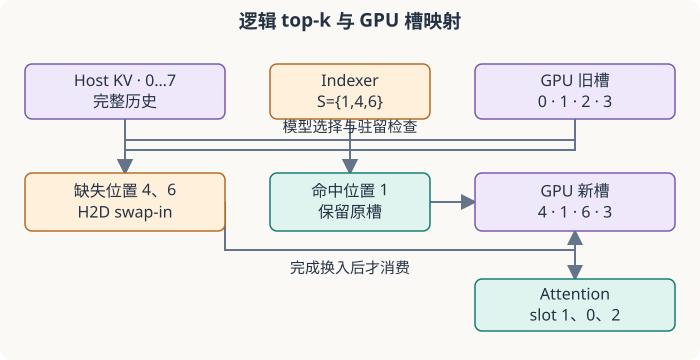
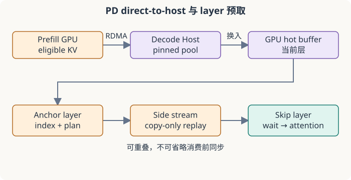

第 31 章 · SGLang 高级机制
HiSparse：从完整 Host KV 到 GPU Working Set
稀疏模型怎样按 top-k 调入活跃 KV，并把搬运藏在计算之后？
一个 64K token 请求，每一步只访问 2K 个历史位置，但下一步的 2K 可能改变。只删除上一步未选中的 KV 会导致未来无法恢复。稀疏算术和物理驻留是两个问题：前者由模型的 indexer 决定，后者由缓存管理器决定。HiSparse 不是把普通 dense attention 随意截断。
1. 为什么稀疏 Attention 仍然会耗尽显存
一个 64K token 请求，每一步只访问 2K 个历史位置，但下一步的 2K 可能改变。只删除上一步未选中的 KV 会导致未来无法恢复。稀疏算术和物理驻留是两个问题：前者由模型的 indexer 决定，后者由缓存管理器决定。HiSparse 不是把普通 dense attention 随意截断。
2. Host 保存历史，GPU 保存当前工作集
把每层 KV 视为 N 个逻辑 token rows。支持的稀疏层把完整可访问的历史放在 pinned host pool，GPU 为每个请求留出 B 个 hot slots；索引与某些非稀疏状态仍可能在 GPU。短序列 N≤B 时无需换入，长序列先判断命中再对缺页进行换入。

3. 从逻辑位置到物理位置
令 S_t 为模型在当前层选中的逻辑位置集合，H_t 为当前设备驻留集合。先找 S_t∩H_t，再将 S_t∖H_t 中的项写入不属于当前工作集的槽。attention 必须读取映射后的 device slot，而非把 token ID 当作地址。新 token 的 KV 要有备份并遵守异步生命周期。
4. 计算和 IO 的成本模型
若每个被调入的位置在当前层需要 b 字节，理想搬运量是缺失位置数乘 b；忽略页对齐、索引及协议开销。B≥k 是这个 toy 模型能同时驻留整个工作集的条件。N=8192、B=4096、k=2048 时，若 1536 个位置命中，仅搬 512 个位置。GPU 持久 payload 上界约为 B/N，但不含其他池。
5. PD：直接进入 Decode Host
Prefill 生成历史 KV 后可经 RDMA 直达 Decode pinned host pool，避免先塞入 Decode GPU 再拷出。DeepSeek V4 中 C4 KV 走此路径，而 c4_indexer 与 C128 KV 仍按设备间传输；MiniMax M3 dense 层仍留 GPU。传输完成及 slot 初始化必须在消费前建立依赖。

6. Anchor 与 Skip layer 的预取
对于共享 index 的模型，anchor 层计算出的 miss plan 可被后续 skip layers 用于提前 copy-only swap。独立 stream 可以隐藏部分 IO，不能消除必须等待的事件。官方 guide 中该预取自动资格不含 PP 与 speculative decoding；这不意味着所有 HiSparse 模式都不支持任何 speculative decoding。
7. 配置、反例与实验
固定版本的 guide 要求 PD 模式且只在 Decode 启用 --enable-hisparse；配置包含 top_k、device_buffer_size、host_to_device_ratio 与 swap_in_block_size。反例：两个连续 top-k 集合完全不交，缓存每步抖动；降低显存并不保证 ITL 下降。记录命中率、H2D bytes、GPU/host 峰值、TTFT/ITL 和并发，固定模型与输入长度。
8. 交互：改变机制状态
稀疏注意力状态选择
全部命中：H={0,1,2,3}，S={1,3}：0 次 H2D；slot 不变。
部分命中：H={0,1,2,3}，S={1,4}：1 次 H2D；保留 1，将 4 调入空闲或可驱逐槽。
工作集切换：H={0,1,2,3}，S={4,5}：2 次 H2D。旧历史仍在 host；若 B<k，拒绝此教学配置。
上述均为教学数值；不代表 GPU benchmark。
9. 可执行 CPU 实验
下载 hisparse_working_set.py，使用 Python 标准库执行。实验验证离散状态与边界，不调用真实 SGLang engine 或 GPU kernel。
python3 examples/hisparse_working_set.py测试包含正常输入和不变量检查，具体断言见源文件。
10. 源码阅读路线与适用边界
固定上游实现快照 75ed36d976113c693f8e6f64925e119573a93fda。以下是源码与官方文档入口；教学公式是显式假设下的推导。
- Prerequisites / Decode Workflow：HiSparse is decode-only in PD disaggregation; supported sparse model families keep complete eligible KV in pinned host memory and a bounded hot device buffer.
- PD Disaggregation Integration (Direct-to-Host)：Prefill can write directly to decode host pool; DeepSeek V4 uses direct-to-host for C4 KV only.
- Shared-index prefetch (automatic)：Anchor index miss plans can be replayed by skip layers on a side stream; eligibility excludes PP and speculative decoding for this prefetch.
- HiSparseDSATokenToKVPool / translate_loc_to_hisparse_device：The device pool implements logical-to-device location translation.